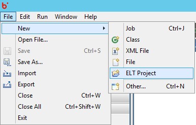
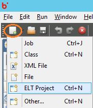
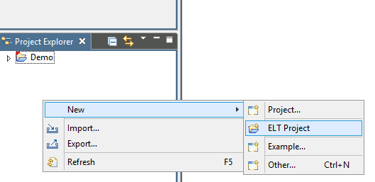
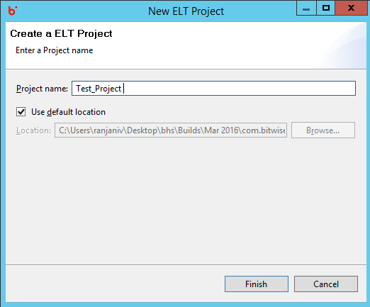
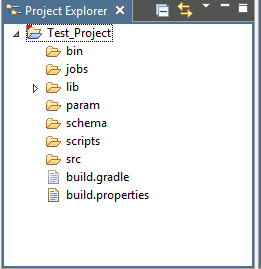

Hydrograph Help
Hydrograph Help
How to Create an ELT Project
Hydrograph Release Version 1.0
To Create an ELT project in Hydrograph, users have been provided with options in the File menu, Tool bar and the Project Explorer. Under the File Menu -> New -> ELT Project, creates a new job on the Canvas.

Users can alternatively click on the Tool bar button to create a new ELT Project.

Right Click Project Explorer -> New -> ELT Project also creates a new ELT project in Hydrograph.

On creating a new project, the new ELT project window opens up. User needs to provide a name to the project and browse a location to save it. By default, Hydrograph saves the job in the project workspace.

Finish will create the project and the project will be visible in the project explorer with default folder structure followed in Hydrograph.
